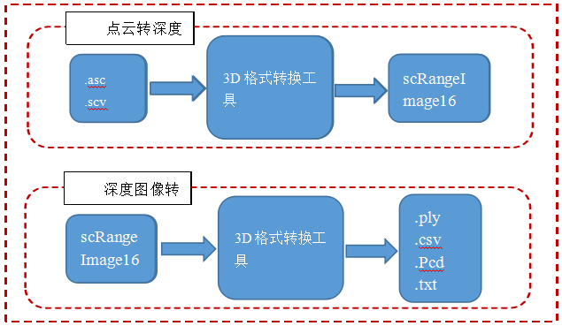
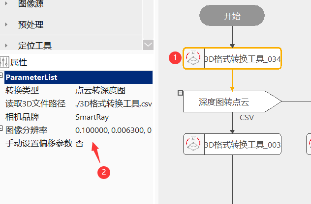
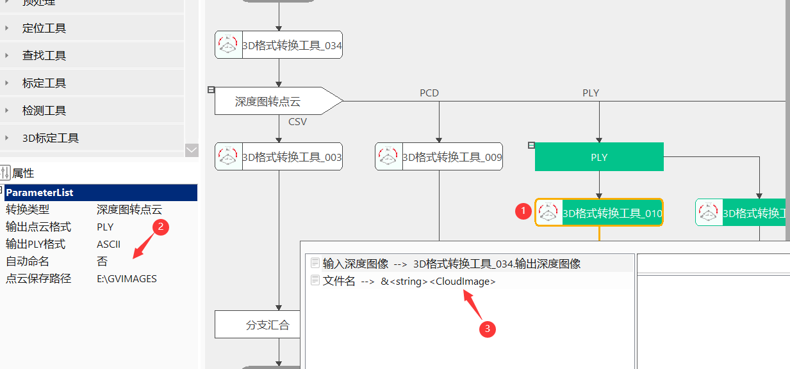

3D格式转化工具能够将点云数据（asc、csv)转换为深度图像，或将深度图像转换为点云图像（ply、pcd、csv、txt）。

在3D工程项目中，使用到视觉软件未兼容的传感器采集的3D数据格式，因此就需要使用到一个对目前使用最广泛的3D数据格式转换为视觉软件可以兼容的深度图像模式的工具，方便视觉软件对前场硬件的兼容性，另外视觉软件使用的深度图像导出，传递给其他软件使用，因此需要一个工具将深度图像转换成目前被广泛采用的3D数据格式。
3D格式转换工具的主要功能是：
对输入的深度图像进行指定点云格式的转换，输出点云文件；
对输入的点云文件，按照不同传感器型号的深度图像参数进行转换，转换为深度图像；

读取csv文件路径
选择需要转换的CSV格式3D点云文件路径；
读取asc文件路径
选择需要转换的ASC格式3D点云文件路径；
传感器
选择传感器的品牌，主要是为了设置传感器驱动参数，目前支持（SmartRay、Keyence、LMI、Precitec）四种传感器品牌；
传感器型号
选择传感器为SmartRay时，可以设置传感器的型号，主要是为了便捷设置默认深度图像参数；
跳过行数
选择传感器为Keyence时，如果待转换文件中带有分辨率等参数，可以选择跳过传感器分辨率信息号；不带有分辨率信息选择跳过行数为0；
深度图像参数
设置深度图像的XYZ三个方向分辨率和XYZ三个方向偏移量；

输出点云格式
选择深度图像要转换的点云文件的类型，分为CSV、PCD、PLY、TXT。
输出PLY格式
当输出点云格式设置为PLY时，PLY分为两种格式：ASCII、BINARY可以选择输出。
是否覆盖
可以设置要转换保存的点云文件是否覆盖掉上次转换的结果，选择“是”，输出点云文件名称会是工具名称，下次执行会重新刷新；选择“否”，输出的点云文件名称会是工具名称+日期时间，下次执行会生成新的点云文件；
保存点云文件路径
选择点云文件保存的文件夹路径；
无
| 参数名称 | 参数说明 |
|---|---|
| 转换类型 | 包括两种，深度图转点云和点云转深度图 |
| 读取3D文件路径 | 点云转深度图像时，设置点云文件路径 |
| 相机品牌 | 设置传感器厂商名称 |
| 跳过行数 | 设置跳过文件中分辨路信息行数 |
| 缩放比例 | 点云文件单位和转换后像素单位之间的转换比例 |
| 图像分辨率 | 深度图像的XYZ三个方向分辨率 |
| 手动设置偏移参数 | 是：可以手动修改深度图像参数；否：使用传感器型号默认参数 |
| 图像偏移 | 深度图像的XYZ三个方向偏移量 |
| 输出点云格式 | 设置输出保存点云的格式，包括csv、pcd、ply和txt格式 |
| 输出PLY格式 | 设置输出的PLY文件的ASCII、BINARY类型 |
| 自动命名 | 保存的文件是否自动命名，是：系统自动命名；否：数据链接输入文件名 |
| 是否覆盖上次文件 | 设置转换点云文件是否覆盖上次文件 |
| 点云保存路径 | 设置转换点云文件的保存文件夹路径 |
| 文件名 | 深度图转点云模式下：设置保存点云文件的名称 |
| 文件路径与文件名 | 深度图像转点云图像时，输出保存点云文件的路径与文件名 |
| 输入深度图像（图像窗口） | 显示输入的深度图像 |
| 输入深度图像（数据链） | 用来获取需要比对的深度图像参数 |
| 参数名称 | 参数说明 |
|---|---|
| 输出深度图像 | 输出转换后的深度图像大小、深度图像参数 |
| 文件路径与文件名 | 深度图转点云模式下，显示保存文件路径和名称 |
| 执行结果 | 工具执行结果 |
| 执行时间 | 工具执行时间 |
| 输出深度图像（图像窗口） | 显示转换后的深度图像 |
| 输出深度图像（数据链） | 输出转换后的深度图像大小、深度图像参数 |
参见“\Samples\3D\深度图\3D格式转换工具.gvp”。